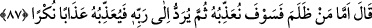
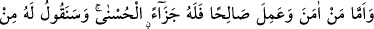
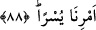

Birincisi eski hal üzere devam edenler için, ikincisi ise tevbe edenler için olsun.
87. O, şöyle dedi: “Haksızlık edeni cezalandıracağız; sonra o, Rabbine
gönderilecek; sonra Allah da ona korkunç bir azap uygulayacak.”
“O,” Zülkarneyn “şöyle dedi: Haksızlık edeni” küfürde ısrar edip, benim îman
teklifimi kabul etmeyeni, ben ve beraberimdekiler öldürerek “cezalandıracağız;”
Katâde’den rivâyet edildiğine göre Zülkarneyn, küfürde ısrar edenleri kazanlara
doldurup kaynatır, îman edenlere ihsanda bulunup giydirirdi.
“Sonra o,” âhirette “Rabbine gönderilecek; sonra Allah da” orada “ona korkunç
bir azab uygulayacak.” Yâni onlara benzeri görülmeyen cehennem azabıyla azab
edecektir.
88. “Îman edip de sâlih amel işleyen kimseye gelince, onun için de en güzel
mükâfat vardır. Ona buyruğumuzdan kolay olanını söyleyeceğiz.”
Fakat dâvitimi kabul ederek “îman edip de” îmânın gerektirdiği şekilde “sâlih amel
işleyen kimseye gelince, onun için de” her iki dünyada “en güzel mükâfat vardır.” Ya
da âhirette ona cennet vardır. “Ona buyruğumuzdan” emrettiğimiz şeylerden “kolay
olanı” basit, zahmetsiz ve meşakkatsiz olanı “söyleyeceğiz.” Yâni ona kendisine zor
geleni değil kolay olanı emredeceğiz.
Kâşifî der ki: “Rivâyet ederler ki o zulmet askeri olan bulutu Nâsik’in kavmi üzerine
havâle etti. Zulmet bulutu onların kulak ve ağızlarına girdi. Bunun üzerine emân istediler
ve îman ettiler.”
Kısasu’l-enbiyâ’da şöyle der: Zülkarneyn (a.s.), batı tarafına gitti. Uğradığı her
topluluğu Allah’a îmâna dâvet ediyordu. Eğer icâbet ederlerse, onlardan bunu kabul
ediyor; icâbet etmezlerse, karanlık onları kaplıyor; şehirlerini, köylerini, kalelerini,
evlerini ve gözlerini örtüyor; ağızlarına, burunlarına, kulaklarına, karınlarına giriyordu.
Onların bu muzdarip ve şaşkın halleri îmâna girinceye kadar devam ediyordu.
Zülkarneyn (a.s.) nihâyet güneşin battığı yere ulaştı. Burada Allah Teâlâ’nın Kitabında
zikrettiği kavmi buldu. Diğerlerine yaptığı dâveti onlara da yaptı. Sonra karanlıkta tam
sekiz gün ve gece yürüdü. Beraberindekiler ise onu bekliyorlardı. Nihâyet etrafı geniş
arazi ile çevrilmiş bir dağa vardı. Baktı ki bir melek dağı kabzetmiş tutuyor ve yüksek